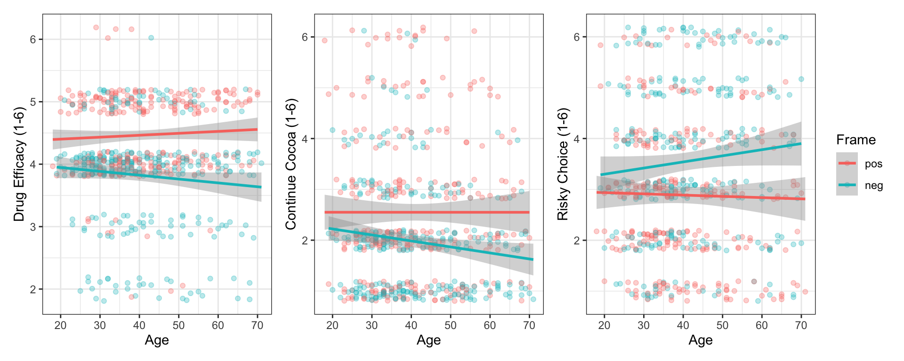
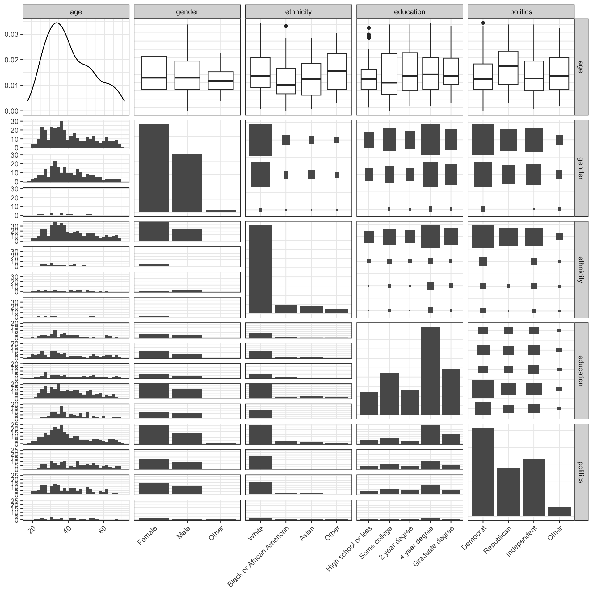
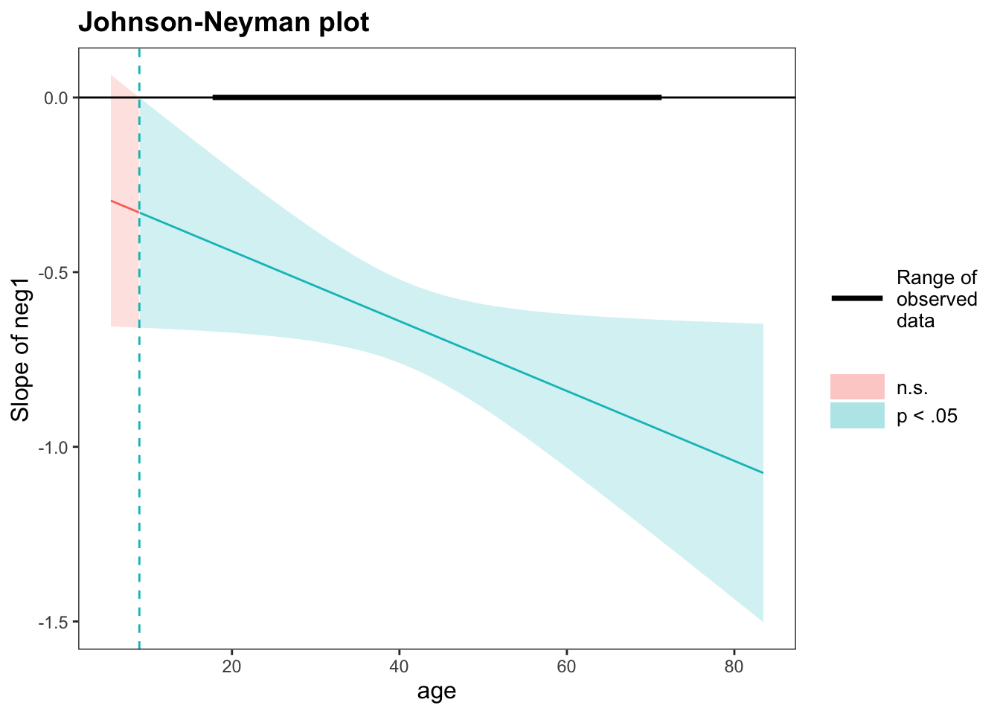
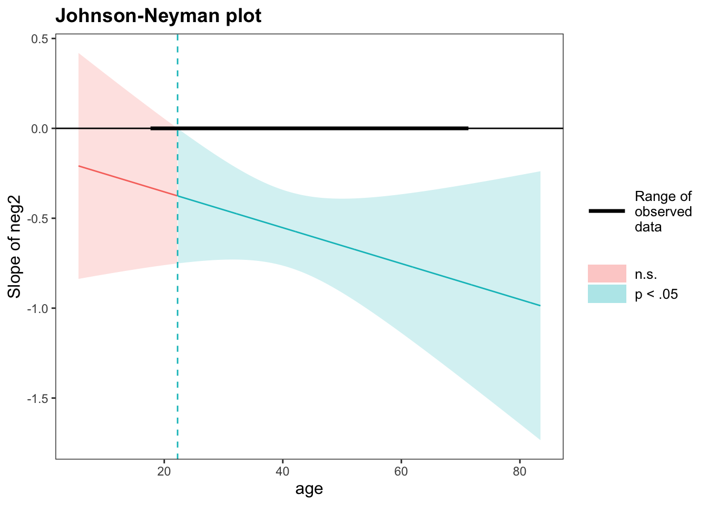
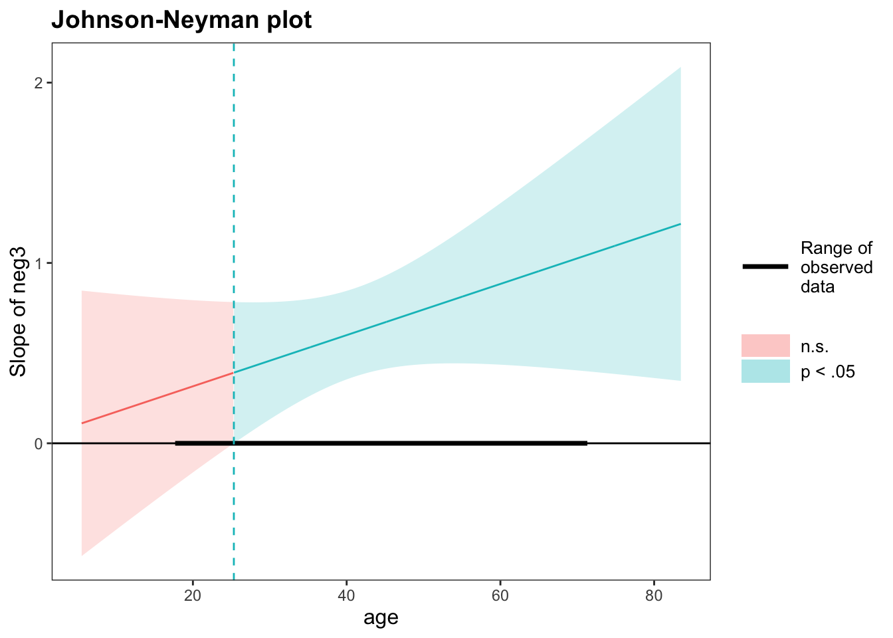

Code
[1] 842 32When people make decisions, their choices are often swayed by how information is presented. This is often described as “the framing effect.” One example of this, is how commercials describe new medications. As an example, Nereus (tradipitant), a new drug for motion-induced vomiting like sea-sickness, is marketed with a positive frame as reducing vomiting incidence from 44% to 18% (a reduction of 60%). This marketing makes it seem more effective than a negative frame that says just 18% of patients still experienced vomiting, even though both statements are true.
Xu (2024) aimed to evaluate whether older adults are more or less vulnerable to framing than younger adults. They collected a sample of 696 adults aged 18 to 71 and exposed them to three different scenarios
Scenario 1: Rate Drug Efficacy (1 = very bad, 6 = very good)
Scenario 2: Likelihood to stop drinking cocoa (1 = surely stop, 6 = surely continue)
Scenario 3: Preference for chance choice (1 = surely safe option, 6 = surely risky)
In each scenario, participants were randomly assigned a positive or negative frame. They rated their response on a 1-6 scale. The researchers want to build three models, one for each scenario adjusting for simultaneous linear changes in demographic variables (gender, ethnicity, education level, political affiliation).
They want to evaluate whether, as adults age, the way choices are worded have more influence on their judgments and ultimate choices. If there is a change, are those changes driven by positive or negative framings? At what age does this effect onset?
Your Goals:
emmeans, emtrends or johnson_neyman).R code, but I expect you to do a much better job using the techniques we discussed (they do somethings differently)The data are in HW4Data.csv but they will require some manual and tidyverse cleaning.
[1] 842 32
FALSE TRUE <NA>
5 596 95
Female Male Non-binary / third gender
349 233 7
Prefer not to say
3
American Indian or Alaska Native Asian
2 43
Black or African American Native Hawaiian or Pacific Islander
46 2
Other Prefer not to say
16 3
White
480
2 year degree 4 year degree Doctorate
65 233 9
High school graduate Less than high school Professional degree
59 2 113
Some college
111
Democrat Independent Prefer not to say Republican
256 168 6 140
Something else
22 dat <- dat |>
mutate(gender = case_when(gender %in% c("Female", "Male") ~ gender,
TRUE ~ "Other"),
ethnicity = case_when(ethnicity %in% c("White", "Black or African American", "Asian") ~ ethnicity,
TRUE ~ "Other"),
education = case_when(education %in% c("Less than high school",
"High school graduate") ~ "High school or less",
education %in% c("Professional degree",
"Doctorate") ~ "Graduate degree",
TRUE ~ education),
politics = case_when(politics %in% c("Democrat", "Republican", "Independent") ~ politics,
TRUE ~ "Other")) |>
mutate(gender = factor(gender, levels = c("Female", "Male", "Other")),
ethnicity = factor(ethnicity, levels = c("White", "Black or African American",
"Asian", "Other")),
education = factor(education, levels = c("High school or less", "Some college",
"2 year degree", "4 year degree",
"Graduate degree")),
politics = factor(politics, levels = c("Democrat", "Republican",
"Independent", "Other")))
table(dat$gender)
Female Male Other
349 233 10
White Black or African American Asian
480 46 43
Other
23
High school or less Some college 2 year degree 4 year degree
61 111 65 233
Graduate degree
122
Democrat Republican Independent Other
256 140 168 28 pick1 pick2 pick3 frame1 frame2 frame3
Min. :2.00 Min. :1.000 Min. :1.000 pos:274 pos:295 pos:303
1st Qu.:4.00 1st Qu.:1.000 1st Qu.:2.000 neg:318 neg:297 neg:289
Median :4.00 Median :2.000 Median :3.000
Mean :4.12 Mean :2.262 Mean :3.215
3rd Qu.:5.00 3rd Qu.:3.000 3rd Qu.:4.000
Max. :6.00 Max. :6.000 Max. :6.000
NA's :1
age gender ethnicity
Min. :18.0 Female:349 White :480
1st Qu.:31.0 Male :233 Black or African American: 46
Median :38.0 Other : 10 Asian : 43
Mean :40.8 Other : 23
3rd Qu.:50.0
Max. :71.0
education politics
High school or less: 61 Democrat :256
Some college :111 Republican :140
2 year degree : 65 Independent:168
4 year degree :233 Other : 28
Graduate degree :122
The raw export had two header rows and 20 empty trailing columns; I kept the variable-name row as headers and dropped the empty columns. Of 842 rows, 696 were completed surveys. I kept only the 592 participants who passed both attention checks. I set the positive frame as the reference level, so the interaction term estimates how the age effect differs under the negative frame. I collapsed sparse demographic categories: gender (Female, Male, Other), ethnicity (White, Black, Asian, Other), education (High school or less, Some college, 2 year, 4 year, Graduate), and politics (Democrat, Republican, Independent, Other).
| frame1 | n | Mean | SD |
|---|---|---|---|
| pos | 274 | 4.467 | 0.630 |
| neg | 318 | 3.821 | 0.815 |
| frame2 | n | Mean | SD |
|---|---|---|---|
| pos | 295 | 2.549 | 1.423 |
| neg | 297 | 1.976 | 1.060 |
| frame3 | n | Mean | SD |
|---|---|---|---|
| pos | 303 | 2.888 | 1.407 |
| neg | 289 | 3.559 | 1.508 |
p1 <- ggplot(dat, aes(x = age, y = pick1, color = frame1)) +
geom_jitter(width = 0, height = 0.2, alpha = 0.3) +
geom_smooth(method = "lm") +
theme_bw() +
xlab("Age") +
ylab("Drug Efficacy (1-6)") +
labs(color = "Frame")
p2 <- ggplot(dat, aes(x = age, y = pick2, color = frame2)) +
geom_jitter(width = 0, height = 0.2, alpha = 0.3) +
geom_smooth(method = "lm") +
theme_bw() +
xlab("Age") +
ylab("Continue Cocoa (1-6)") +
labs(color = "Frame")
p3 <- ggplot(dat, aes(x = age, y = pick3, color = frame3)) +
geom_jitter(width = 0, height = 0.2, alpha = 0.3) +
geom_smooth(method = "lm") +
theme_bw() +
xlab("Age") +
ylab("Risky Choice (1-6)") +
labs(color = "Frame")
(p1 + p2 + p3) + plot_layout(guides = "collect")
Welch Two Sample t-test
data: age by frame1
t = 0.81247, df = 581.19, p-value = 0.4169
alternative hypothesis: true difference in means between group pos and group neg is not equal to 0
95 percent confidence interval:
-1.181506 2.848678
sample estimates:
mean in group pos mean in group neg
41.25182 40.41824
Welch Two Sample t-test
data: age by frame2
t = 0.16341, df = 589.85, p-value = 0.8703
alternative hypothesis: true difference in means between group pos and group neg is not equal to 0
95 percent confidence interval:
-1.846719 2.181913
sample estimates:
mean in group pos mean in group neg
40.88814 40.72054
Welch Two Sample t-test
data: age by frame3
t = -1.5555, df = 588.13, p-value = 0.1204
alternative hypothesis: true difference in means between group pos and group neg is not equal to 0
95 percent confidence interval:
-3.6043605 0.4184115
sample estimates:
mean in group pos mean in group neg
40.02640 41.61938 
I first compared mean responses by frame. The drug was rated as more effective under the positive frame, participants were less willing to continue drinking cocoa under the negative frame, and they preferred the risky option more under the negative frame. Plotting responses against age by frame showed that the positive-frame lines were nearly flat, while the negative-frame lines changed with age, so the gap between frames appeared to widen for older adults; this suggests a frame × age interaction driven by the negative frame. Welch t-tests found no age difference between frames in any scenario, confirming that random assignment balanced age. Pairwise plots showed no clear associations among the predictors, so multicollinearity does not appear to be a concern.
The residuals fall along parallel bands because responses can only be integers from 1 to 6. The Q-Q plot shows that the residuals are close to Gaussian.
Several observations have high leverage, likely because they belong to small demographic groups. However, all Cook’s distances are far below the moderate threshold, so no single observation has a strong influence on the model.
GVIF Df GVIF^(1/(2*Df))
frame1 1.017894 1 1.008907
age.c 2.339811 1 1.529644
gender 1.075843 2 1.018444
ethnicity 1.143267 3 1.022566
education 1.133688 4 1.015808
politics 1.185533 3 1.028772
frame1:age.c 2.264757 1 1.504911 GVIF Df GVIF^(1/(2*Df))
frame1 1.017889 1 1.008905
age.c 1.055095 1 1.027178
gender 1.073616 2 1.017917
ethnicity 1.137853 3 1.021757
education 1.130613 4 1.015463
politics 1.178447 3 1.027744All adjusted GVIF values were between 1.0 and 1.5, so multicollinearity is not a concern.
Analysis of Variance Table
Response: pick1
Df Sum Sq Mean Sq F value Pr(>F)
frame1 1 61.497 61.497 114.7912 < 2e-16 ***
age.c 1 0.367 0.367 0.6841 0.40851
gender 2 0.735 0.367 0.6858 0.50410
ethnicity 3 3.262 1.087 2.0298 0.10860
education 4 2.095 0.524 0.9778 0.41906
politics 3 1.714 0.571 1.0666 0.36273
frame1:age.c 1 2.232 2.232 4.1668 0.04168 *
Residuals 576 308.582 0.536
---
Signif. codes: 0 '***' 0.001 '**' 0.01 '*' 0.05 '.' 0.1 ' ' 1Omega2 (partial) | 95% CI
-------------------------------
0.17 | [0.11, 1.00]
- One-sided CIs: upper bound fixed at [1.00].# Effect Size for ANOVA (Type I)
Parameter | Omega2 (partial) | 95% CI
----------------------------------------------
frame1 | 0.16 | [0.12, 1.00]
age.c | 0.00 | [0.00, 1.00]
gender | 0.00 | [0.00, 1.00]
ethnicity | 5.19e-03 | [0.00, 1.00]
education | 0.00 | [0.00, 1.00]
politics | 3.37e-04 | [0.00, 1.00]
frame1:age.c | 5.32e-03 | [0.00, 1.00]
- One-sided CIs: upper bound fixed at [1.00].The frame had a strong effect on efficacy ratings. The frame × age interaction was also significant, but its effect size was very small. None of the demographic variables were significant. Overall, the model had a large effect size.
| Estimate | Std. Error | t value | Pr(>|t|) | |
|---|---|---|---|---|
| (Intercept) | 4.374 | 0.115 | 38.178 | 0.000 |
| frame1neg | -0.648 | 0.061 | -10.649 | 0.000 |
| age.c | 0.005 | 0.004 | 1.235 | 0.217 |
| genderMale | -0.020 | 0.063 | -0.313 | 0.755 |
| genderOther | 0.269 | 0.240 | 1.123 | 0.262 |
| ethnicityBlack or African American | 0.181 | 0.116 | 1.564 | 0.118 |
| ethnicityAsian | -0.051 | 0.119 | -0.426 | 0.670 |
| ethnicityOther | -0.256 | 0.159 | -1.609 | 0.108 |
| educationSome college | 0.133 | 0.118 | 1.136 | 0.257 |
| education2 year degree | 0.185 | 0.131 | 1.405 | 0.161 |
| education4 year degree | 0.120 | 0.108 | 1.117 | 0.264 |
| educationGraduate degree | 0.015 | 0.117 | 0.128 | 0.898 |
| politicsRepublican | -0.079 | 0.080 | -0.987 | 0.324 |
| politicsIndependent | 0.075 | 0.074 | 1.018 | 0.309 |
| politicsOther | -0.072 | 0.149 | -0.480 | 0.631 |
| frame1neg:age.c | -0.010 | 0.005 | -2.041 | 0.042 |
At the average age, participants who saw the negative frame rated the drug 0.65 points lower than those who saw the positive frame. For each additional year of age, this gap grew by about 0.01 points.
frame1 age.c.trend SE df t.ratio p.value
pos 0.00456 0.00369 576 1.235 0.2173
neg -0.00544 0.00329 576 -1.653 0.0988
Results are averaged over the levels of: gender, ethnicity, education, politics contrast estimate SE df t.ratio p.value
pos - neg 0.01 0.0049 576 2.041 0.0417
Results are averaged over the levels of: gender, ethnicity, education, politics Under the positive frame, ratings rose slightly with age, while under the negative frame they fell slightly with age. Neither slope was significant on its own, but the difference between them was. So the framing effect grows with age because of small opposing trends in both frames, not because of the negative frame alone.
age.c = -20.804:
contrast estimate SE df t.ratio p.value
pos - neg 0.44 0.1190 576 3.703 0.0002
age.c = -10.804:
contrast estimate SE df t.ratio p.value
pos - neg 0.54 0.0808 576 6.688 <0.0001
age.c = -0.804:
contrast estimate SE df t.ratio p.value
pos - neg 0.64 0.0610 576 10.494 <0.0001
age.c = 9.196:
contrast estimate SE df t.ratio p.value
pos - neg 0.74 0.0757 576 9.784 <0.0001
age.c = 19.196:
contrast estimate SE df t.ratio p.value
pos - neg 0.84 0.1120 576 7.506 <0.0001
age.c = 29.196:
contrast estimate SE df t.ratio p.value
pos - neg 0.94 0.1550 576 6.052 <0.0001
Results are averaged over the levels of: gender, ethnicity, education, politics The framing effect (positive minus negative) increased steadily with age, from 0.44 points at age 20 to 0.94 points at age 70, and it was significant at every age I tested.
JOHNSON-NEYMAN INTERVAL
When age is OUTSIDE the interval [-1674.92, 8.94], the slope of neg1 is p <
.05.
Note: The range of observed values of age is [18.00, 71.00]
Interval calculated using false discovery rate adjusted t = 1.96 
The Johnson-Neyman analysis showed that the framing effect is significant for all ages above 8.94. Since the youngest participant was 18, the framing effect was significant across the entire observed age range.
The residuals again fall along parallel bands because responses are integers from 1 to 6. Residuals are right-skewed: the Q-Q plot shows a heavier upper tail than expected under a Gaussian distribution.
Some observations have high leverage, but all Cook’s distances are far below the moderate threshold, so no observation is highly influential.
GVIF Df GVIF^(1/(2*Df))
frame2 1.033200 1 1.016464
age.c 2.168475 1 1.472574
gender 1.076946 2 1.018705
ethnicity 1.145603 3 1.022914
education 1.163222 4 1.019079
politics 1.176610 3 1.027477
frame2:age.c 2.101072 1 1.449508 GVIF Df GVIF^(1/(2*Df))
frame2 1.033190 1 1.016459
age.c 1.055060 1 1.027161
gender 1.075166 2 1.018284
ethnicity 1.137667 3 1.021729
education 1.148770 4 1.017488
politics 1.176079 3 1.027400All adjusted GVIF values were between 1.0 and 1.5, so multicollinearity is not a concern.
Analysis of Variance Table
Response: pick2
Df Sum Sq Mean Sq F value Pr(>F)
frame2 1 48.54 48.545 30.6451 4.712e-08 ***
age.c 1 3.39 3.387 2.1383 0.1442
gender 2 0.82 0.411 0.2592 0.7717
ethnicity 3 2.71 0.902 0.5695 0.6353
education 4 5.74 1.435 0.9056 0.4603
politics 3 0.54 0.181 0.1145 0.9516
frame2:age.c 1 2.23 2.232 1.4092 0.2357
Residuals 576 912.44 1.584
---
Signif. codes: 0 '***' 0.001 '**' 0.01 '*' 0.05 '.' 0.1 ' ' 1Omega2 (partial) | 95% CI
-------------------------------
0.04 | [0.00, 1.00]
- One-sided CIs: upper bound fixed at [1.00].# Effect Size for ANOVA (Type I)
Parameter | Omega2 (partial) | 95% CI
----------------------------------------------
frame2 | 0.05 | [0.02, 1.00]
age.c | 1.92e-03 | [0.00, 1.00]
gender | 0.00 | [0.00, 1.00]
ethnicity | 0.00 | [0.00, 1.00]
education | 0.00 | [0.00, 1.00]
politics | 0.00 | [0.00, 1.00]
frame2:age.c | 6.91e-04 | [0.00, 1.00]
- One-sided CIs: upper bound fixed at [1.00].The frame had a significant effect on willingness to continue drinking cocoa, though the effect size was small. The frame × age interaction was not significant. None of the demographic variables were significant. The overall model had a small effect size (ω² = 0.04).
| Estimate | Std. Error | t value | Pr(>|t|) | |
|---|---|---|---|---|
| (Intercept) | 2.357 | 0.190 | 12.392 | 0.000 |
| frame2neg | -0.561 | 0.105 | -5.332 | 0.000 |
| age.c | -0.001 | 0.006 | -0.207 | 0.836 |
| genderMale | 0.035 | 0.108 | 0.321 | 0.748 |
| genderOther | 0.235 | 0.413 | 0.570 | 0.569 |
| ethnicityBlack or African American | -0.233 | 0.200 | -1.169 | 0.243 |
| ethnicityAsian | -0.082 | 0.205 | -0.400 | 0.689 |
| ethnicityOther | -0.052 | 0.274 | -0.190 | 0.850 |
| educationSome college | 0.266 | 0.201 | 1.322 | 0.187 |
| education2 year degree | 0.118 | 0.227 | 0.517 | 0.606 |
| education4 year degree | 0.275 | 0.185 | 1.487 | 0.138 |
| educationGraduate degree | 0.130 | 0.201 | 0.646 | 0.518 |
| politicsRepublican | -0.018 | 0.138 | -0.127 | 0.899 |
| politicsIndependent | -0.020 | 0.127 | -0.159 | 0.874 |
| politicsOther | 0.127 | 0.256 | 0.496 | 0.620 |
| frame2neg:age.c | -0.010 | 0.008 | -1.187 | 0.236 |
At the average age, participants who saw the negative frame were 0.56 points more likely to say they would stop drinking cocoa than those who saw the positive frame. The interaction coefficient is not significant here.
frame2 age.c.trend SE df t.ratio p.value
pos -0.00127 0.00611 576 -0.207 0.8357
neg -0.01124 0.00586 576 -1.918 0.0556
Results are averaged over the levels of: gender, ethnicity, education, politics contrast estimate SE df t.ratio p.value
pos - neg 0.00998 0.0084 576 1.187 0.2357
Results are averaged over the levels of: gender, ethnicity, education, politics There is not enough evidence that age changes the framing effect in this scenario.
age.c = -20.804:
contrast estimate SE df t.ratio p.value
pos - neg 0.353 0.204 576 1.734 0.0835
age.c = -10.804:
contrast estimate SE df t.ratio p.value
pos - neg 0.453 0.139 576 3.265 0.0012
age.c = -0.804:
contrast estimate SE df t.ratio p.value
pos - neg 0.553 0.105 576 5.246 <0.0001
age.c = 9.196:
contrast estimate SE df t.ratio p.value
pos - neg 0.652 0.131 576 4.992 <0.0001
age.c = 19.196:
contrast estimate SE df t.ratio p.value
pos - neg 0.752 0.193 576 3.901 0.0001
age.c = 29.196:
contrast estimate SE df t.ratio p.value
pos - neg 0.852 0.267 576 3.188 0.0015
Results are averaged over the levels of: gender, ethnicity, education, politics The estimated framing effect grew from 0.35 points at age 20 to 0.85 points at age 70. It was not significant at age 20 (p = 0.084) but was significant from age 30 onward. Because the interaction was not significant, this pattern mostly reflects larger standard errors at the youngest ages rather than a true change in the framing effect.
JOHNSON-NEYMAN INTERVAL
When age is INSIDE the interval [22.25, 120.37], the slope of neg2 is p <
.05.
Note: The range of observed values of age is [18.00, 71.00]
Interval calculated using false discovery rate adjusted t = 2.00 
The Johnson-Neyman analysis showed that the framing effect is significant for ages above about 22. However, since the frame × age interaction was not significant, it is not so meaningful to interpret this.
The residuals fall along parallel bands because responses are integers from 1 to 6. Q-Q plot shows a fair Gaussian distribution.
Some observations have high leverage, but all Cook’s distances are far below the moderate threshold, so no observation is influential.
GVIF Df GVIF^(1/(2*Df))
frame3 1.033290 1 1.016509
age.c 2.088709 1 1.445237
gender 1.084603 2 1.020511
ethnicity 1.150019 3 1.023570
education 1.127959 4 1.015165
politics 1.203553 3 1.031361
frame3:age.c 2.027682 1 1.423967 GVIF Df GVIF^(1/(2*Df))
frame3 1.033230 1 1.016479
age.c 1.061355 1 1.030221
gender 1.076443 2 1.018586
ethnicity 1.136971 3 1.021625
education 1.123259 4 1.014635
politics 1.195032 3 1.030141All adjusted GVIF values were between 1.0 and 1.5, so multicollinearity is not a concern.
Analysis of Variance Table
Response: pick3
Df Sum Sq Mean Sq F value Pr(>F)
frame3 1 66.53 66.528 31.9199 2.53e-08 ***
age.c 1 2.00 2.001 0.9599 0.32762
gender 2 0.78 0.392 0.1882 0.82854
ethnicity 3 18.23 6.075 2.9148 0.03377 *
education 4 3.64 0.909 0.4361 0.78258
politics 3 23.64 7.878 3.7801 0.01050 *
frame3:age.c 1 4.48 4.481 2.1501 0.14311
Residuals 575 1198.42 2.084
---
Signif. codes: 0 '***' 0.001 '**' 0.01 '*' 0.05 '.' 0.1 ' ' 1Omega2 (partial) | 95% CI
-------------------------------
0.07 | [0.02, 1.00]
- One-sided CIs: upper bound fixed at [1.00].# Effect Size for ANOVA (Type I)
Parameter | Omega2 (partial) | 95% CI
----------------------------------------------
frame3 | 0.05 | [0.02, 1.00]
age.c | 0.00 | [0.00, 1.00]
gender | 0.00 | [0.00, 1.00]
ethnicity | 9.63e-03 | [0.00, 1.00]
education | 0.00 | [0.00, 1.00]
politics | 0.01 | [0.00, 1.00]
frame3:age.c | 1.94e-03 | [0.00, 1.00]
- One-sided CIs: upper bound fixed at [1.00].The frame had a significant effect on risk preference, though the effect size was small. The frame × age interaction was not significant. Ethnicity and political affiliation were significant, but their effect sizes were very small. The overall model had a small effect size.
| Estimate | Std. Error | t value | Pr(>|t|) | |
|---|---|---|---|---|
| (Intercept) | 2.487 | 0.220 | 11.296 | 0.000 |
| frame3neg | 0.611 | 0.121 | 5.061 | 0.000 |
| age.c | -0.001 | 0.007 | -0.091 | 0.928 |
| genderMale | 0.049 | 0.124 | 0.394 | 0.693 |
| genderOther | 0.047 | 0.475 | 0.099 | 0.921 |
| ethnicityBlack or African American | 0.361 | 0.229 | 1.580 | 0.115 |
| ethnicityAsian | 0.411 | 0.236 | 1.737 | 0.083 |
| ethnicityOther | -0.417 | 0.314 | -1.329 | 0.184 |
| educationSome college | 0.170 | 0.231 | 0.737 | 0.461 |
| education2 year degree | 0.019 | 0.259 | 0.073 | 0.942 |
| education4 year degree | 0.244 | 0.212 | 1.155 | 0.248 |
| educationGraduate degree | 0.068 | 0.231 | 0.292 | 0.770 |
| politicsRepublican | 0.280 | 0.158 | 1.768 | 0.078 |
| politicsIndependent | 0.499 | 0.147 | 3.386 | 0.001 |
| politicsOther | 0.239 | 0.295 | 0.811 | 0.418 |
| frame3neg:age.c | 0.014 | 0.010 | 1.466 | 0.143 |
At the average age, participants who saw the negative frame were 0.61 points more likely to choose the risky option than those who saw the positive frame. Independents were 0.50 points more likely to choose the risky option than Democrats. The interaction coefficient suggests the framing effect grows with age, but it was not significant.
frame3 age.c.trend SE df t.ratio p.value
pos -0.000626 0.00689 575 -0.091 0.9276
neg 0.013565 0.00690 575 1.966 0.0498
Results are averaged over the levels of: gender, ethnicity, education, politics contrast estimate SE df t.ratio p.value
pos - neg -0.0142 0.00968 575 -1.466 0.1431
Results are averaged over the levels of: gender, ethnicity, education, politics Under the positive frame, risk preference did not change with age. Under the negative frame, older participants were slightly more likely to choose the risky option, which is just barely significant. However, the two slopes were not significantly different, so there is only weak evidence that the negative frame drives an age-related change in this scenario.
age.c = -20.804:
contrast estimate SE df t.ratio p.value
pos - neg -0.316 0.236 575 -1.341 0.1804
age.c = -10.804:
contrast estimate SE df t.ratio p.value
pos - neg -0.458 0.160 575 -2.856 0.0045
age.c = -0.804:
contrast estimate SE df t.ratio p.value
pos - neg -0.600 0.121 575 -4.954 <0.0001
age.c = 9.196:
contrast estimate SE df t.ratio p.value
pos - neg -0.742 0.149 575 -4.962 <0.0001
age.c = 19.196:
contrast estimate SE df t.ratio p.value
pos - neg -0.884 0.221 575 -4.002 <0.0001
age.c = 29.196:
contrast estimate SE df t.ratio p.value
pos - neg -1.025 0.306 575 -3.347 0.0009
Results are averaged over the levels of: gender, ethnicity, education, politics The framing effect (negative minus positive) grew from 0.32 points at age 20 to 1.03 points at age 70. It was not significant at age 20 but was significant from age 30 onward.
JOHNSON-NEYMAN INTERVAL
When age is INSIDE the interval [25.33, 151.11], the slope of neg3 is p <
.05.
Note: The range of observed values of age is [18.00, 71.00]
Interval calculated using false discovery rate adjusted t = 2.03 
The Johnson-Neyman analysis showed that the framing effect is significant for ages between 25.3 and 151.1. This means the effect is significant for participants older than about 25. However, since the frame × age interaction was not significant, I do not interpret 25 as a clear onset age.
Across all three scenarios, how a choice was worded clearly changed people’s responses: the negative frame lowered drug ratings, increased willingness to stop drinking cocoa, and increased preference for the risky option. Whether this framing effect grows with age is less clear. In all three scenarios the interaction pointed in the same direction, with the framing effect larger for older adults, but it was significant only for drug efficacy (p = 0.042). In every scenario, the age slope under the positive frame was essentially zero, while the slope under the negative frame was larger and close to significance (p = 0.099, 0.056, 0.0498). This pattern is consistent with Xu (2024)’s conclusion that any age-related change is driven by the negative frame, though my evidence for it is weaker.
I did not find a clear onset age. For drug efficacy, the framing effect was significant across the entire observed age range (18–71). For the other two scenarios, the Johnson-Neyman analysis suggested significance after about ag 22–25, but because their interactions were not significant, I do not interpret these as true onset ages. This differs from Xu (2024), who reported onset ages of about 32–34 even though only one of their interactions was significant.
My results may differ from the original study because I analyzed a stricter sample of 592 participants who passed both attention checks, rather than 696.